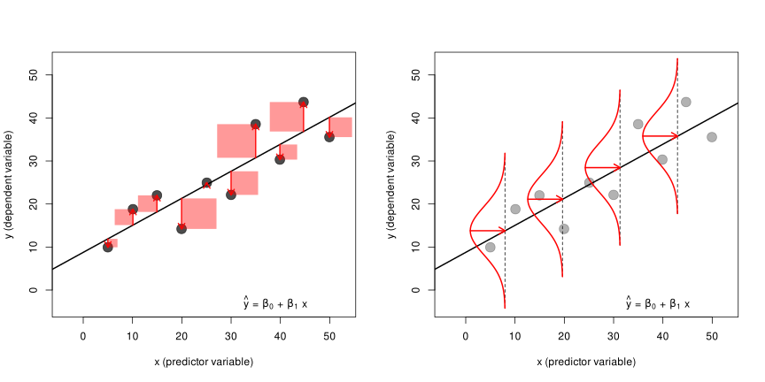
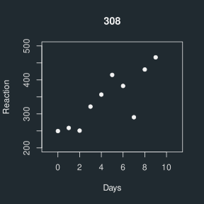
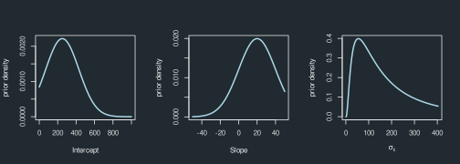
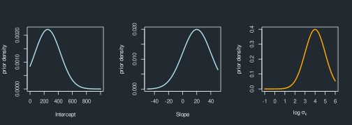
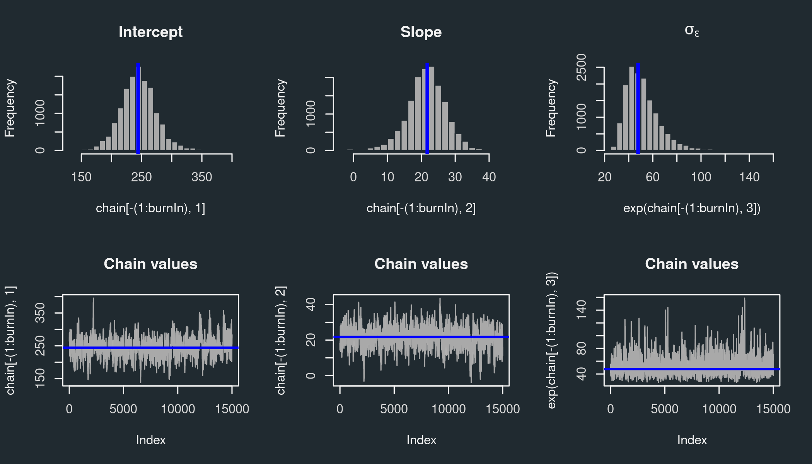
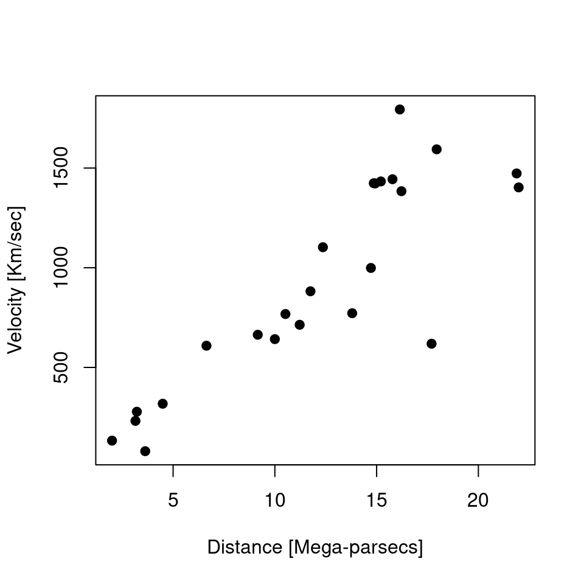
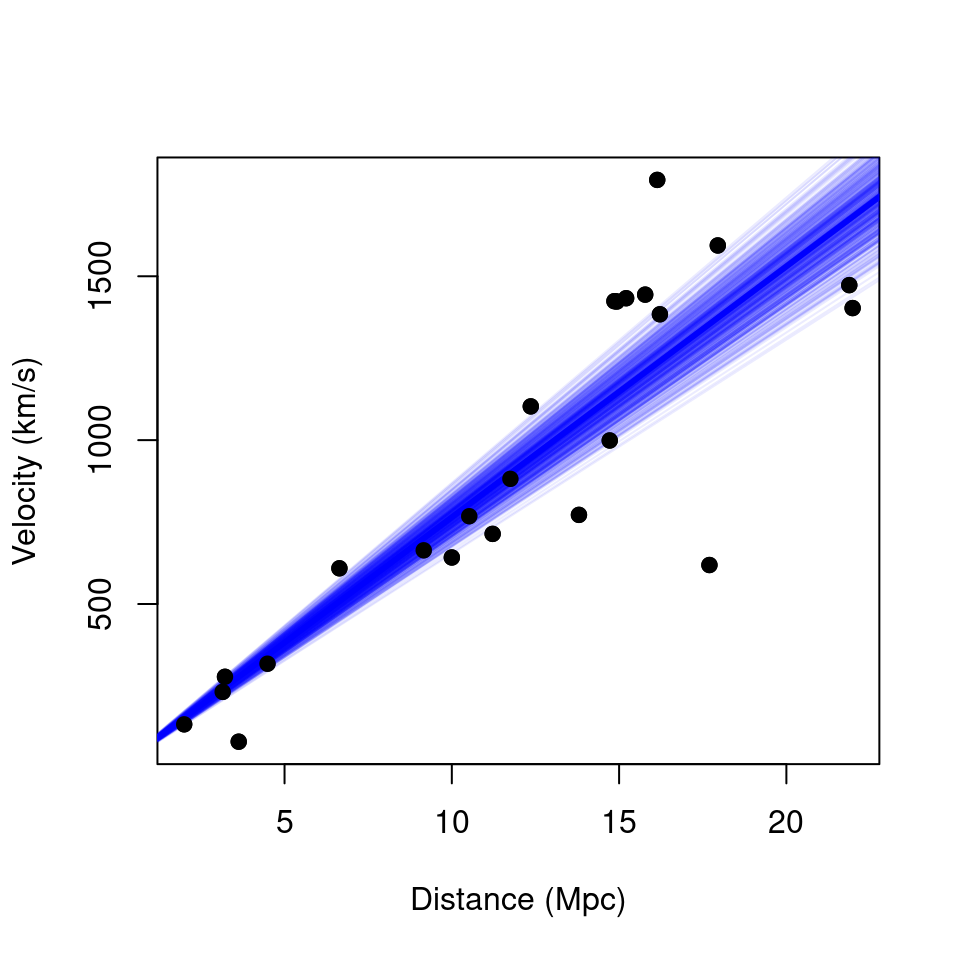
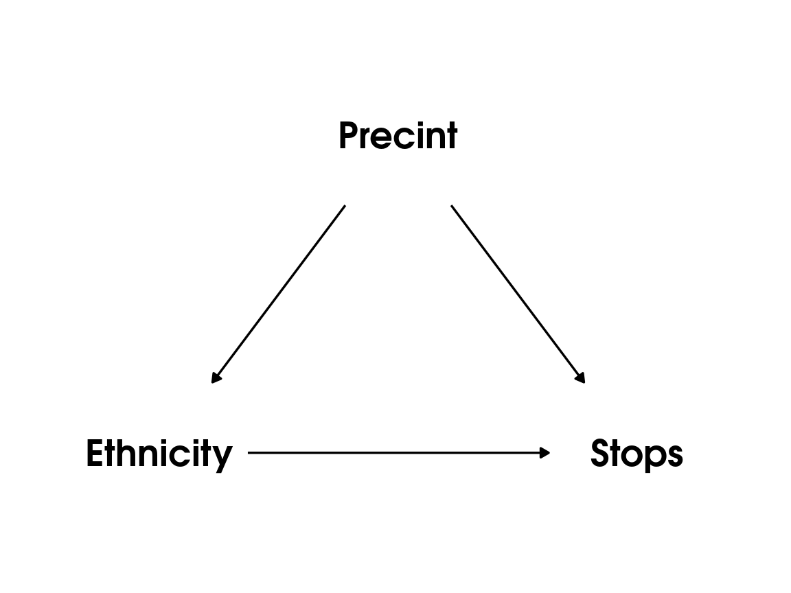
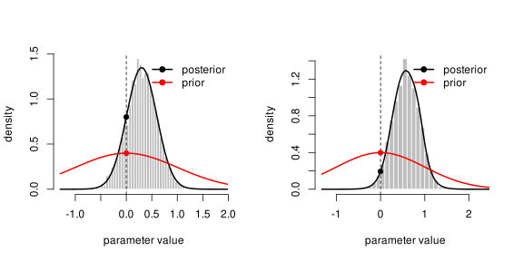

Building and Customising Statistical Models with Stan and R: An Introduction to Bayesian Inference
Workshops for Ukraine
Matteo Lisi


Outline
- How to fit a model to data: frequentist & Bayesian approaches
- Computations in Bayesian inference & MCMC sampling
- Examples
- Bayes factors
Fitting a model: frequentist approach
- Maximum likelihood estimation (MLE)
- Likelihood function: a function that gives the probability of the data, given some parameter values.
MLE in linear regression
The best-fitting line in linear regression minimizes the sum of squared residuals (errors).
Equivalent to maximizing the probability of the data assuming errors have a Gaussian distribution.
Likelihood function
Defined as the probability of the data as a function of the parameters, usually notated as \(p(\text{data} \mid \text{parameters})\).
For a simple linear regression \[y_i= \beta_0 + \beta_1x_i+\epsilon_i\] \[\epsilon_i \sim \mathcal{N}(0, \sigma^2)\] the likelihood is \[p(\underbrace{y, x}_{\text{data}} \mid \underbrace{\beta_0, \beta_1, \sigma^2}_{\text{parameters}} ) = \underbrace{\prod_{i=1}^{n}}_{\text{product}} \,\, \underbrace{\mathcal{N}(\overbrace{\beta_0 + \beta_1 x_i}^{\text{predicted value}}\,\,,\,\,\, \sigma^2)}_{\text{Gaussian probability density}}\]
Likelihood function
In practice, we usually work with the logarithm of the likelihood function (log-likelihood)
\[\begin{align} \mathcal{L}(y, x \mid \beta_0, \beta_1, \sigma^2 ) & = \log \left[ L(y, x \mid \beta_0, \beta_1, \sigma^2) \right]\\ = -\frac{n}{2}\log(2\pi) & - \frac{n}{2}\log(\sigma^2) - \frac{1}{2\sigma^2} \underbrace{\sum_{i=1}^n \left( y_i - \beta_0 - \beta_1 x_i\right)^2}_{\text{sum of squared residual errors}}\\ \end{align}\]
- The values of intercept \(\beta_0\) and slope \(\beta_1\) that minimize the sum of squared residuals also maximize the (log) likelihood function.
The frequentist approach
- Maximum likelihood estimation forms the backbone of statistical estimation in frequentist inference.
- Key principles of frequentist inference:
- Parameters are treated as unknown but fixed quantities.
- The goal is to obtain the best point estimates for these parameters.
- Probabilities are not used to quantify uncertainty about parameter values.
- Uncertainty in estimates is assessed with respect to hypothetical repetitions of the same experiment (as in the definition of a confidence interval).
- Probability is interpreted as the long-run frequency of an event across an infinite series of repeated trials or samples.
The Bayesian approach
- Probability expresses a degree of belief or confidence in an event or proposition.
- Parameters are treated as random variables with uncertainty described by a prior distribution.
- Observed data are used to update this prior, producing a posterior distribution.
- Bayes’ theorem formalizes this update, but the Bayesian approach is not defined by the theorem itself—it follows naturally from the axioms of probability.
- “The essential characteristic of Bayesian methods is their explicit use of probability to quantify uncertainty in inferences based on statistical analysis.” (Gelman et al., 2013)
Elements of a Bayesian model
In a Bayesian setting we have:
likelihood \(p\left(\text{data} \mid \theta\right)\), giving probability of the data conditional on the parameter(s) \(\theta\);
prior \(p\left(\theta\right)\), which formalizes a-priori belief about the plausibility of parameter values
posterior distribution, obtained by applying Bayes theorem: \[p\left(\theta \mid \text{data}\right) = \frac{p\left(\text{data} \mid \theta\right) p\left(\theta\right)}{p\left( \text{data} \right)}\]
Elements of a Bayesian model
In a Bayesian setting we have:
likelihood \(p\left(\text{data} \mid \theta\right)\), giving probability of the data conditional on the parameter(s) \(\theta\);
prior \(p\left(\theta\right)\), which formalizes a-priori belief about the plausibility of parameter values
posterior distribution, obtained by applying Bayes theorem: \[p\left(\theta \mid \text{data}\right) = \frac{p\left(\text{data} \mid \theta\right)p\left(\theta\right)}{\int p\left( \text{data} \mid \theta \right) p\left(\theta\right) d\theta}\]
Elements of a Bayesian model
In a Bayesian setting we have:
likelihood \(p\left(\text{data} \mid \theta\right)\), giving probability of the data conditional on the parameter(s) \(\theta\);
prior \(p\left(\theta\right)\), which formalizes a-priori belief about the plausibility of parameter values
posterior distribution, obtained by applying Bayes theorem: \[\text{posterior} = \frac{\text{likelihood} \times \text{prior}}{\text{average likelihood}}\]
Elements of a Bayesian model
In a Bayesian setting we have:
likelihood \(p\left(\text{data} \mid \theta\right)\), giving probability of the data conditional on the parameter(s) \(\theta\);
prior \(p\left(\theta\right)\), which formalizes a-priori belief about the plausibility of parameter values
posterior distribution, obtained by applying Bayes theorem: \[\text{posterior} \propto \text{likelihood} \times \text{prior}\]
Bayesian inference
To study a specific parameter (e.g. the slope \(\beta_1\)), we look at its marginal posterior distribution.
This is obtained by averaging over the other parameters: \[p(\beta_1 \mid \text{data}) = \int \int p(\beta_1, \beta_0, \sigma \mid \text{data}), d\beta_0, d\sigma.\]
For complex models, this integration is done efficiently using Markov Chain Monte Carlo (MCMC) sampling.
MCMC yields samples from the posterior; summarizing the marginal posterior then reduces to counting these samples.
Metropolis example
Say you want to sample from a probability distribution \(p({\bf x})\) (e.g. the posterior), but you can only evaluate a function \(f({\bf x})\) that is proportional to the density \(p({\bf x})\) (e.g. the product of prior and likelihood).
Initialization:
choose arbitrary starting point \({\bf x}_0\)
choose a probability distribution to generate proposals \(g({\bf x}_{n+1}|{\bf x}_n)\) (proposal density)
For each iteration \(i\):
generate a candidate \({\bf x'}\) sampling from \(g({\bf x}_{i+1}|{\bf x}_{i})\)
calculate the .purple[acceptance ratio] \(a = \frac{f({\bf x}')}{f({\bf x}_{i})}\)
.purple[accept/reject]: generate a uniform number \(u\) in \([0,1]\)
if \(u \le a\), accept and set \({\bf x}_{i+1}={\bf x'}\) (“move to the new value”)
if \(u > a\), reject and set \({\bf x}_{i+1}={\bf x}_{i}\) (“stay where you are”)
Metropolis example
Implementing Metropolis algorithm to fit regression for one participant of the dataset sleepstudy (from the lme4 package).

Metropolis example
Custom function to compute the log likelihood, holding the data fixed.
Metropolis example
Prior distribution about parameter values

Metropolis example
Prior distribution about parameter values

Metropolis example
Custom function that compute the joint prior log-probability
Note: logarithm transform a product into a sum: \(\log(x \times y) = \log(x) + \log(y)\)
Metropolis example
Choose the arbitrary starting point and the proposal density \(g({\bf x}_{n+1}|{\bf x}_n)\)
Metropolis example
Another function to run sampling steps for a given number of iterations
run_metropolis_MCMC <- function(startvalue, iterations){
# set up an empty array to store sampled values
chain <- array(dim = c(iterations+1,3))
# put starting values at top of arrays
chain[1,] <- startvalue
for (i in 1:iterations){
# draw a random proposal
proposal <- proposalfunction(chain[i,])
# ratio of posterior density between new and old values
a <- exp(logposterior(proposal) - logposterior(chain[i,]))
# sample random number & accept/reject the parameter values
if (runif(1) < a){
chain[i+1,] <- proposal
}else{
chain[i+1,] <- chain[i,]
}
}
return(chain)
}Metropolis example
Run sampling for many iterations
Output:
Metropolis example
Results:

Metropolis example
With posterior sample, summarising uncertainty is simply a matter of counting values.
We can calculate a 95% Bayesian credible interval for slope by taking the 2.5th and 97.5th percentiles of posterior samples
# remove initial 'burn in' samples
burnIn <- 5000
slope_samples <- chain[-(1:burnIn),2]
# mean of posterior distribution
mean(slope_samples)[1] 21.49595# 95% Bayesian credible interval
alpha <- 0.05
round(c(quantile(slope_samples, probs = alpha/2),
quantile(slope_samples, probs = 1-alpha/2)),
digits=2) 2.5% 97.5%
8.95 32.51 MCMC sampling
The Metropolis algorithm is the ancestor of modern MCMC methods for sampling from unknown posterior distributions.
Modern algorithms are more efficient, using smarter proposal strategies to explore the posterior with fewer samples.
A state-of-the-art algorithm is Hamiltonian Monte Carlo (HMC), implemented in Stan (mc-stan.org).
Stan (named after Stanislaw Ulam, 1909-1984, co-inventor of MCMC methods) is a probabilistic programming language that makes it easy to do Bayesian inference on complex models.
Once a model is defined, Stan compiles a C++ program that uses HMC to draw samples from the posterior.
Stan is free, open-source, and well-documented, with interfaces for R, Python, Matlab, and Mathematica.
Stan examples
Linear regression
Overdispersed Poisson GLMM
Example 1: Linear regression
Hubble dataset
'data.frame': 24 obs. of 3 variables:
$ Galaxy : chr "NGC0300" "NGC0925" "NGC1326A" "NGC1365" ...
$ velocity: int 133 664 1794 1594 1473 278 714 882 80 772 ...
$ distance: num 2 9.16 16.14 17.95 21.88 ... Galaxy velocity distance
1 NGC0300 133 2.00
2 NGC0925 664 9.16
3 NGC1326A 1794 16.14
4 NGC1365 1594 17.95
5 NGC1425 1473 21.88
6 NGC2403 278 3.22Example 1: Hubble data

According to the standard big-bang model, the universe expands uniformly and locally, according to Hubble’s law \[ \text{velocity} = \beta \times \text{distance}\]
where \(\beta\) is the “Hubble’s constant”.
According to this model \(\beta^{-1}\) gives the approximate age of the universe,
Linear model for Hubble data
We assume Gaussian measurement noise
\[v_i = \beta d_i +\epsilon, \qquad \epsilon \sim \mathcal{N}(0, \sigma^2)\]
No intercept needed, and \(\beta\) should be positive.
Prior choice
\(\beta\) is in units of (km/s) per Mpc; we can use a normal prior, truncated at zero \(\beta \sim \mathcal{N}(0, 200)^+\)
for noise: \(\sigma \sim \mathcal{N}(0, 2000)^+\)
Stan code
data {
int<lower=1> N; // number of datapoints
vector[N] distance; // Mpc
vector[N] velocity; // km/s
}
parameters {
real<lower=0> beta; // km/s/Mpc, Hubble constant (slope)
real<lower=0> sigma; // km/s
}
model {
// weakly-informative half-normal priors via <lower=0>
beta ~ normal(0, 200);
sigma ~ normal(0, 2000);
// likelihood
velocity ~ normal(beta * distance, sigma);
}The code contain 3 blocks:
data block, in which variables are declared;
parameters block, in which we declare the parameters that we want to sample;
model block, containing the model specification (i.e. priors and likelihood)
Saved in the text file hubble_model.stan in the stan_code folder.
Prepare data and sample from posterior
Stan wants data in a list format:
Sample from posterior
Load rstan library and run sampling
library(rstan)
rstan_options(auto_write = TRUE) # save compiled model
options(mc.cores = parallel::detectCores()-1) # make all cores-1 available for running parallel chains
fit <- stan(
file = "stan_code/hubble_model.stan",
data = stan_data,
iter = 2000, # number of iterations
chains = 4) # number of parallel chainsConvergence checks
Inference for Stan model: anon_model.
4 chains, each with iter=2000; warmup=1000; thin=1;
post-warmup draws per chain=1000, total post-warmup draws=4000.
mean se_mean sd 2.5% 50% 97.5% n_eff Rhat
beta 76.55 0.08 4.19 68.35 76.50 84.84 2558 1
sigma 273.50 0.97 44.17 204.91 267.99 380.80 2092 1
Samples were drawn using NUTS(diag_e) at Thu Nov 6 17:12:27 2025.
For each parameter, n_eff is a crude measure of effective sample size,
and Rhat is the potential scale reduction factor on split chains (at
convergence, Rhat=1).
The Rhat ( \(\hat{R}\) ) is a diagnostic index; at convergence \(\hat R \approx 1\pm0.1\)
(essentially \(\hat R\) is the ratio of between-chain to within-chain variance)
Posterior samples
Posterior for age of the universe
Visualising uncertainty
Posterior distribution for the estimated age of the universe
Visualising uncertainty
Each posterior sample correspond to a set of parameter values
plot(d$distance, d$velocity, xlab = "Distance (Mpc)", ylab = "Velocity (km/s)")
# draw 500 samples from posterior
idx <- sample(seq_along(posterior_samples$beta), 500)
for(i in idx){
abline(a = 0, b = posterior_samples$beta[i], lwd = 1, col = rgb(0,0,1,0.08))
}
abline(a = 0, b = median(posterior_samples$beta), lwd = 3, col = "blue")
Example 2: Overdispersed Poisson GLMM
Dataset: police stops in NYC (1998–1999)
Context: Study of the NYPD stop-and-frisk policy, investigating possible ethnic bias in police stops.
Source: Records of ≈175,000 stops over 15 months (1998–1999), obtained by the New York State Attorney General’s Office.
Variables:
stops— Number of police stops recorded in 1998–1999 for the cell.pop— Estimated population size of the ethnic group within the precinct (exposure candidate).past.arrests— Number of 1997 arrests (DCJS) for the same group/crime category (proxy for crime exposure), recorded over 1 year.precinct— Precinct ID (integers 1–75).eth— Ethnicity code: 1 = Black, 2 = Hispanic, 3 = White.crime— Crime category: 1 = violent, 2 = weapons, 3 = property, 4 = drug.
Goal:
Model the rate of police stops across ethnic groups and precincts, adjusting for exposure (arrests) and allowing for overdispersion and hierarchical structure.
Summary Statistics
| Ethnicity | Population | Stops | Arrests | % of Stops | % of Population |
|---|---|---|---|---|---|
| Black | 7463580 | 69823 | 125719 | 53% | 28% |
| Hispanic | 6929076 | 44623 | 74898 | 34% | 26% |
| White | 12701416 | 16974 | 35922 | 13% | 47% |
Confounding by location?
Citywise summaries could be biased if stops are mostly determined by the location

Poisson GLM for count data
Let \(y=(y_1, \dots, y_n)\) be the outcome consisting of counts (non-negative integers), assumed to have a Poisson distribution
\[ y_i \sim \text{Poisson} \left(\lambda_i \right) \] where the rate parameter \(\lambda_i\) is modelled as a function of some predictor \(x\)
\[ \lambda_i = e^{\beta_0 + \beta_1 x_i} \] The Poisson model inherently assumes that the mean is equal to the variance:
\[ \mathbb{E}(y)=Var(y)=\lambda\]
In practice we often observe more variability than a Poisson would allow (overdispersion).
Overdispersed Poisson model
\[y_{ep} \;\sim\; \text{Poisson}\bigl(\underbrace{\tfrac{15}{12} \times \text{past.arrests}_{ep} }_{\text{offset term}} \;\times\; e^{\,\alpha_{e} + \beta_{p} + \epsilon_{ep}} \bigr),\] where:
- \(y_{ep}\) = number of stops for ethnicity \(e\) in precinct \(p\).
- \(\alpha_{e}\) = fixed effect for each ethnicity (\(e = 1,2,3\)).
- \(\beta_{p}\) = random effect for precinct \(p\), with \(\beta_p \sim N(0, \sigma_\beta^2).\)
- \(\epsilon_{ep}\) = observation-level overdispersion, \(\epsilon_{ep} \sim N(0, \sigma_\epsilon^2).\)
Hence, the log-rate is: \(\log(\lambda_{ep}) = \alpha_e + \beta_p + \epsilon_{ep}\), and we multiply \(\lambda_{ep}\) by the offset \(\text{past.arrests}_{ep} \times \tfrac{15}{12}\).
Priors
Priors represent our initial beliefs about the plausibility of parameter values.
Unlike likelihoods, there are no conventional priors; choice depends on context.
Priors are subjective but should be explicitly stated for transparency and critique (more transparent than, say, dropping outliers).
Priors are assumptions, and should be criticized (e.g. try different assumptions to check how sensitive inference is to the choice of priors).
Priors cannot be exact, but should be defendable.
Priors
There are no non-informative priors: flat priors such as \(\text{Uniform} \left(- \infty, \infty \right)\) tells the model that unrealistic values (e.g. extremely large) are as plausible as realistic ones.
Priors should restrict parameter space to values that make sense.
Preferably choose weakly informative priors containg less information than what might be known (but still guide the model sensibly).
Priors should provide some regularization, i.e. add some skepticism, akin to penalized likelihood methods in frequentist statistics (e.g. LASSO or ridge regression), preventing overfitting to data.
Prior recommendations: https://github.com/stan-dev/stan/wiki/Prior-Choice-Recommendations
If using informative priors, these should be justified in the text when reporting the results (see examples in Gelman & Hennig, 2016, Beyond subjective and objective in statistics)
When in doubt (especially for complex models where the relationship between prior & observed data is not straighforward) is always a good idea to do a prior predictive check (i.e. sample parameter values from the priors, use it to simulate data, and see if the overall distribution looks sensible).
A note on Bayes factor
Bayes factors
A Bayesian approach to hypothesis testing & model comparison.
Suppose we have 2 competing models for data: model \(M_1\) with parameters \(\theta_1\) vs. model \(M_2\) with parameters \(\theta_2\).
The Bayes factor is the ratio of the marginal (average) likelihoods of the two models \[\text{BF}_{1,2}=\frac{p_1(\text{data}\mid M_1)}{p_1(\text{data}\mid\ M_1)} = \frac{\int p_1(\text{data}\mid\theta_1) p_1(\theta_1) d\theta_1}{\int p_2(\text{data}\mid\theta_2) p_2(\theta_2) d\theta_2}\]
The Bayes factor alone does not tell which model is more likely! This is quantified by the posterior odds, which takes also the prior odds into account: \[\underbrace{\frac{p(M_1 \mid \text{data})}{p(M_2 \mid \text{data})}}_{\text{posterior odds}} = \underbrace{\frac{p(M_1)}{p(M_2)}}_{\text{prior odds}} \times \underbrace{\frac{\int p_1(\text{data}\mid\theta_1) p_1(\theta_1) d\theta_1}{\int p_2(\text{data}\mid\theta_2) p_2(\theta_2) d\theta_2}}_{\text{Bayes factor}}\]
The Bayes factors only tells us how much - given the data and the prior - we need to update our relative beliefs between two models.
Say we found that \(\text{BF}_{1,2} \approx 3\), we can say that ‘the data are \(\approx\) 3 times more likely under model 1 than model 2’.
Bayes factors for nested models: the Savage–Dickey density ratio
When the two models are nested (e.g. the \(M_1\) is a special case of \(M_2\) in which which one specific parameter is set to zero - corresponding to the null hypothesis in classical NHST framework), the Bayes factor can be obtained by dividing the height of the posterior by the height of the prior at the point of interest (Dickey & Lientz, 1970)
Left plot: \(BF_{0,1} \approx 2\); and right plot \(BF_{0,1} \approx \frac{1}{2}\) (thus implying \(BF_{1,0} \approx 2\))

(see savage.dickey.bf() function in mlisi package)
Cautionary note about Bayes factors
Bayes factors represents the update in beliefs from prior to posterior, and therefore are strongly dependent on the prior used.
Bayes factors are “(…) very sensitive to features of the prior that have almost no effect on the posterior. With hundreds of data points, the difference between a normal(0, 1) and normal(0, 100) prior is negligible if the true value is in the range (-3, 3), but it can have a huge effect on Bayes factors.” (Bob Carpenter, post link)
Bayes factors makes sense only if you have good reasons for selecting a particular prior!
If not, other approaches may be preferable - e.g. Bayesian cross-validation, and information criteria like WAIC.
Never trust a paper that just throws Bayes factors there without specifying and motivating the priors!
References
Wood, Simon. Generalized Additive Models: An Introduction with R. 2nd ed. Chapman & Hall/CRC Press, 2017. https://doi.org/10.1201/9781315370279.
Gelman, Andrew, and Jennifer Hill. Data Analysis Using Regression and Multilevel/Hierarchical Models. 2007.

#StandWithUkraine